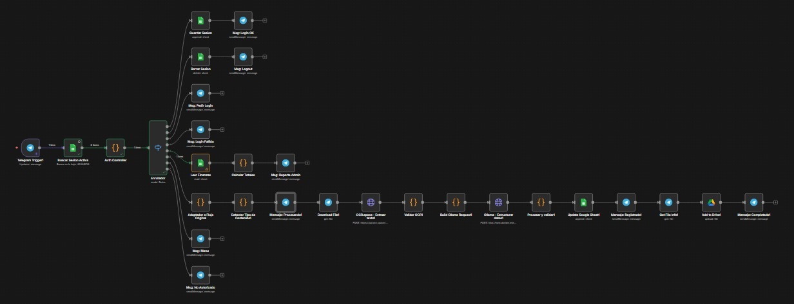
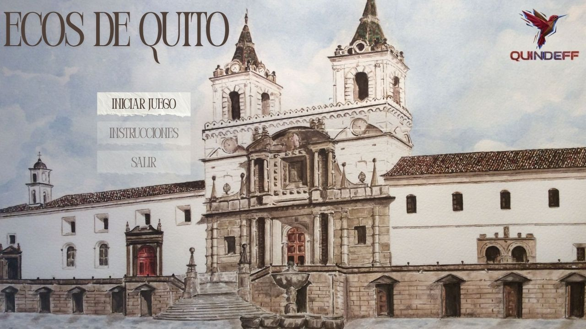
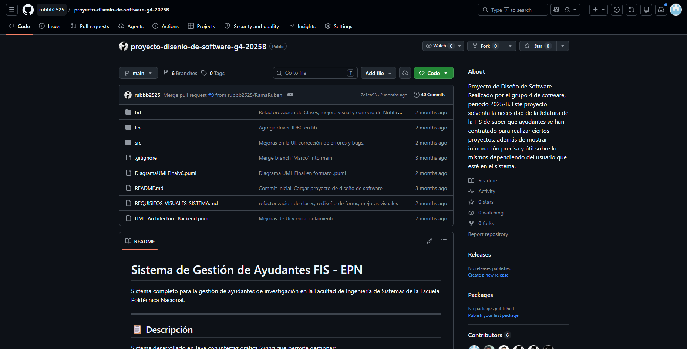

Proyectos realizados
Estos proyectos representan trabajos académicos y personales realizados durante mi formación.
GalaPaguitos: Agente de Inteligencia Artificial enfocado en Pymes

Este proyecto fue desarrollado en equipo para la asignatura de Inteligencia Artificial y Machine Learning, en el cual realizamos un bot de inteligencia artificial para ayudar a las pymes mediante n8n.
Videojuego: Un videojuego basado en la leyenda de Cantuña

Videojuego desarrollado en equipo para la asignatura de Computación Gráfica, basado en la leyenda de Cantuña, con el objetivo de aprender a programar utilizando conceptos de computación gráfica.
Administrador de ayudantes de proyecto de investigación

Proyecto enfocado en organizar información visualmente y facilitar la administración de ayudantes en proyectos de investigación del DICC de la Escuela Politecnica Nacional.